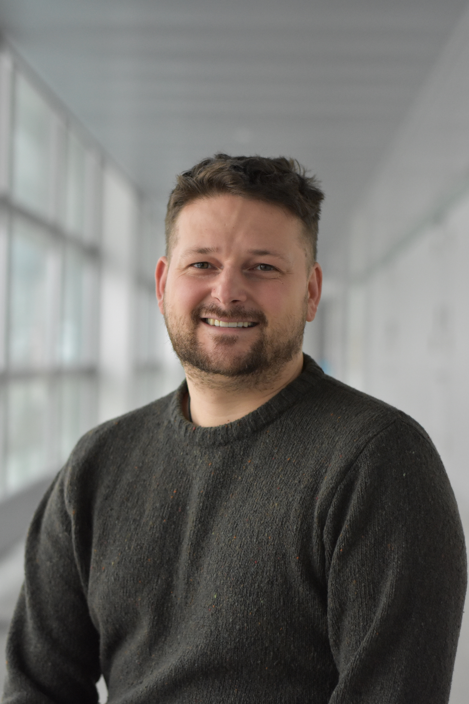
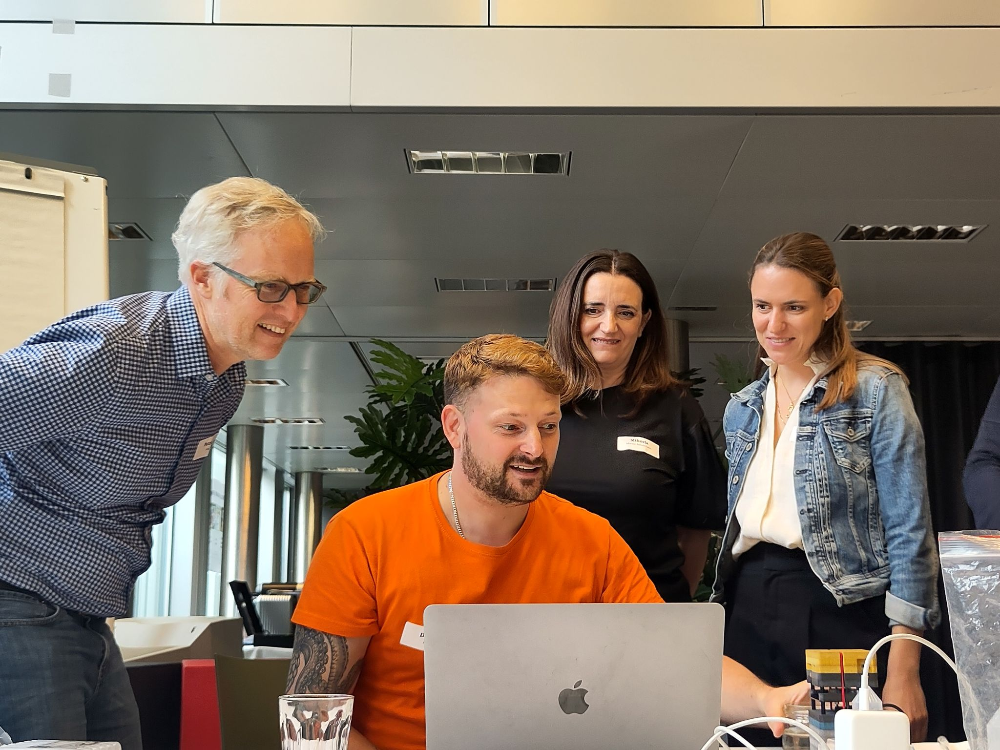

"Exploring marine plankton diversity and ecosystem functions through modeling approaches."
I am a Postdoctoral Researcher at ETH Zurich, jointly affiliated with the Institute of Microbiology and the Institute of Biogeochemistry and Pollutant Dynamics. Building upon my PhD research within the same group, my work focuses on mapping the contemporary and future global distribution of marine plankton and understanding how this diversity drives ocean ecosystem functions and global biogeochemical cycles.
To overcome the challenges of sparse and uneven ocean sampling, I utilize and advance specialized Empirical Models optimized for data-scarce regions. My academic background includes a BSc in Ecology from the University of Vienna and an MSc in Marine Biology from the University of Algarve, where I specialized in the taxonomic profiling of coral-associated prokaryotic communities. Having been with ETH Zurich since 2019, progressing from an intern to a PhD candidate, and now a Postdoc, I integrate long-term institutional expertise with cutting-edge ecological modeling to resolve global marine biodiversity patterns.

Summarized here are key findings and contributions from my research across marine ecology and biodiversity.
This section contains my up-to-date curriculum vitae and a selected list of publications, reflecting ongoing contributions to marine science and ecological modeling.
Visualize datasets used within my publications through interactive maps and exploratory tools.
Recently I joined a diversity workshop where I tutored and explained to non-scientists the importance of plankton.
